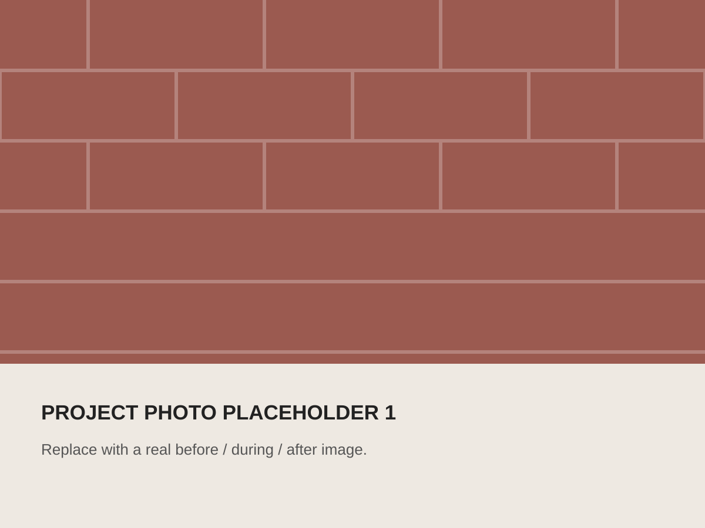
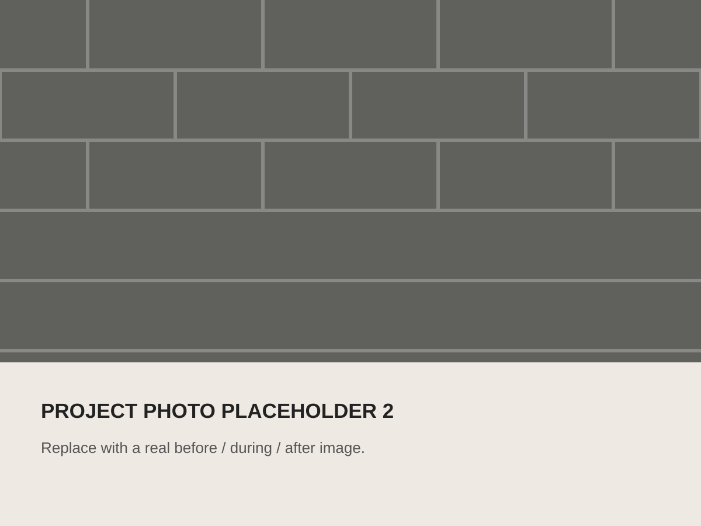
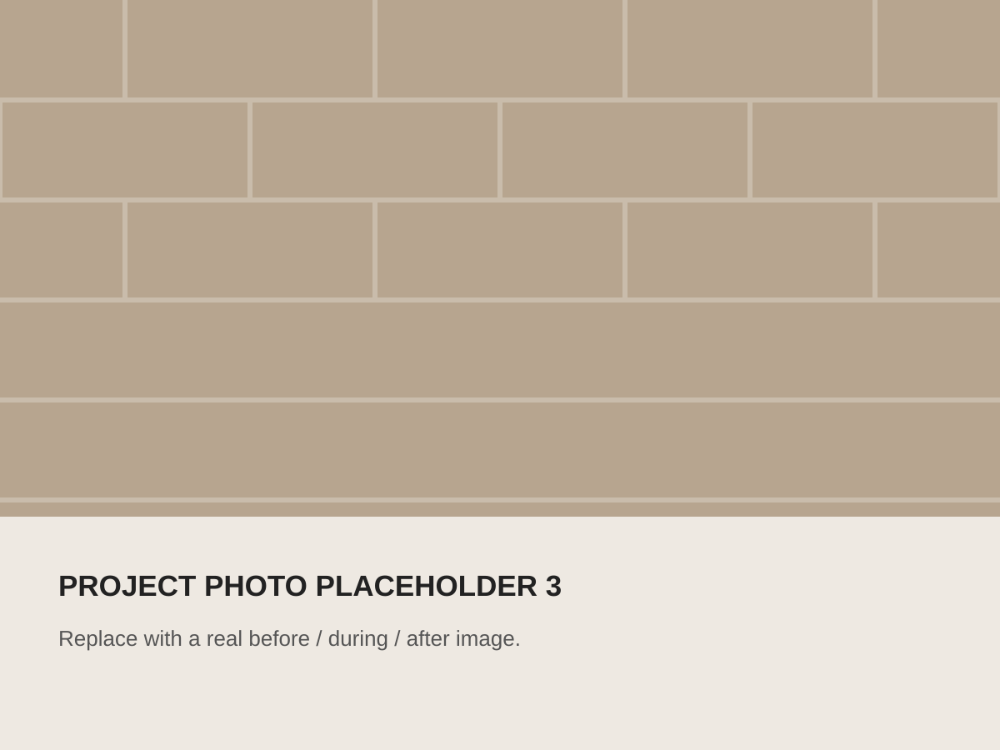

Brickwork & Repairs
New brickwork, garden walls, alterations, repairs and sympathetic replacement of damaged masonry.
Berkshire & Buckinghamshire
Independent building contractor specialising in brickwork, external works, period restoration and property maintenance for homeowners and property managers.

Services
This is placeholder copy for now. The final service list should reflect the work Mark most wants to win and the work his customers already know him for.
New brickwork, garden walls, alterations, repairs and sympathetic replacement of damaged masonry.
Careful repair and restoration of older brick buildings, period walls and weathered masonry.
Reliable property repairs and ongoing maintenance for homeowners, landlords and property managers.
Paving, drainage, fencing and associated external works undertaken as individual jobs or part of wider projects.
About Mark
Farrant Building is the trading name of Mark Farrant, an experienced building contractor working across Berkshire and Buckinghamshire.
Mark has spent more than five decades in the building trade, with particular experience in brickwork, building repair and restoration. He undertakes much of the work personally and, where a project requires additional specialist trades, works with trusted tradespeople.
Replace or refine this copy once Mark has talked you through his background, notable projects and the way he prefers to work.
Selected work
These are deliberately obvious placeholders. Replace them with real project photographs and short descriptions as you collect them.

Restoration
Placeholder description: damaged brickwork carefully repaired and repointed to retain the character of the original wall.

Brickwork
Placeholder description: localised repairs, replacement bricks and finishing work to restore a clean, consistent elevation.

Maintenance
Placeholder description: a package of practical repairs and external maintenance completed for a residential property.
Customer feedback
Mark currently gets his work through word of mouth. Once the Google Business Profile is live, replace these placeholders with genuine customer reviews.
“Customer review placeholder. Add a real review here once permission has been obtained.”
“Customer review placeholder. Short, specific reviews about workmanship and reliability will be strongest.”
Get in touch
Email Mark with a short description of the work, the property location and, if useful, a few photographs.